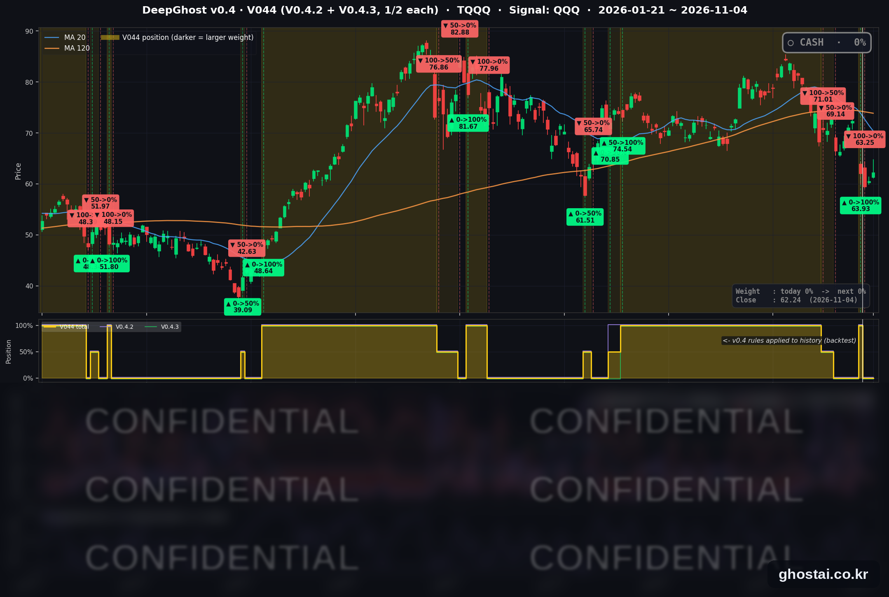

블루 웨이브에 다우 폭등, 반도체 하락
· Ghost.AI 데일리 리포트
👻 매일 시그널과 히스토리를 홈페이지에서 한눈에 → www.ghostai.co.kr
회원 페이지 안내 — 회원 가입하시면 커버리지 전 종목의 원본 시그널과 분석 레포트를 매일 확인하실 수 있습니다. 회원 페이지는 블로그·유튜브보다 먼저 업데이트됩니다. 지금 베타 회원을 받고 있으며, 이메일과 필명만으로 가입하실 수 있고 서비스 사용료는 받지 않습니다. 이메일 확인 후 바로 이용하실 수 있습니다.
민주당이 중간선거에서 상·하원 다수당을 모두 확보, 다우는 3.03% 올라 2025년 4월 9일 이후 하루 상승률이 가장 컸고 S&P 500 구성종목 493개 중 375개가 올랐습니다. 데이터센터 건설 제한 우려로 반도체 ETF SOXX 는 3.14% 내렸고 QQQ 는 0.97% 상승에 그쳤습니다. 전략은 11월 2일 시가 63.25달러에 TQQQ 를 매도한 뒤 새 신호 없이 현금 보유 중입니다.
📊 오늘의 매매 신호
| 항목 | 내용 |
|---|---|
| 오늘의 신호 | 🟡 신규 신호 없음 — 전략은 현금 보유를 유지합니다 |
| 포지션 상태 | 💵 현금 보유 중 (OUT OF POSITION) |
| 현금 보유 기간 | 2026-11-02 ~ 2026-11-04 (3일, 11월 2일 시가 매도 후) |
| TQQQ 종가 | $62.24(+2.79%) |
TQQQ 시그널 — OUT OF POSITION
현재 상태: 현금 보유 중 | 11월 2일 시가 $63.25 매도

전략은 11월 2일(월) 시가 63.25달러에 TQQQ 를 매도한 뒤 현금 보유 중이고, 11월 4일에도 새 신호는 나오지 않았습니다. TQQQ 는 2.79% 오른 62.24달러로 마감했습니다. 장중 고가 64.755달러는 매도가를 넘었지만, 종가는 매도가보다 1.60%, 6월 2일 최고 종가(87.22달러)보다 28.64% 낮습니다.
오늘 미국 시장 — 시황 요약
지수 마감
| 지수 | 종가 | 등락률 |
|---|---|---|
| S&P 500 | 7,688.62 | +1.58% |
| 나스닥 종합 | 25,736.51 | +1.44% |
| 다우존스 | 53,356.12 | +3.03% |
| 러셀 2000 (IWM) | 284.02 | +1.51% |
| QQQ (나스닥100) | 691.95 | +0.97% |
| TQQQ | 62.24 | +2.79% |
| 반도체 ETF (SOXX) | 450.41 | -3.14% |
S&P 500 구성종목 등락률 중간값은 +2.63% 로 지수 상승률보다 높습니다. 전일에는 180개 종목만 오르고 중간값이 -0.54% 였습니다. 시가총액이 큰 AI 관련주가 내려 지수 상승 폭을 줄였습니다. QQQ 는 장중 2.36% 까지 올랐다가 0.97% 로 마감했습니다.
사상 최고 종가를 기록한 지수는 없습니다. S&P 500 은 10월 6일 최고 종가보다 1.67%, QQQ 는 8.91%, 다우는 8월 5일 최고 종가보다 1.83% 낮습니다.
국채 금리 동향
| 만기 | 11/3 종가 | 11/4 종가 | 전일 대비 |
|---|---|---|---|
| 5년 | 4.743% | 4.689% | -5.4bp |
| 10년 | 4.952% | 4.894% | -5.8bp |
| 30년 | 5.324% | 5.282% | -4.2bp |
10년물은 전일 상승분을 되돌려 11월 2일 종가와 같아졌고, 그 이전으로는 9월 9일(4.837%) 이후 가장 낮습니다. 미 재무부 기준 2년물은 4.58% 로 3bp 내렸고, 10년물과 3개월물의 차이는 74bp 에서 69bp 로 줄었으며 역전은 없습니다. 금리에 민감한 주택건설주는 세부 업종 중간값이 7.12% 올랐고, 여기에는 생활비 부담 완화 기대도 함께 반영됐습니다(CNBC).
연준 발언 & 금리 패스
11월 4일에는 연준 위원의 새 공개 발언이 확인되지 않았습니다.
- 최근 발언 (10/30): 로건 댈러스 연은 총재는 "적어도 두 번 더 0.25%p 인상이 필요하다", 무살렘 세인트루이스 연은 총재는 "추가 인상이 곧 필요하다"고 말했습니다. 둘 다 매파적입니다.
- 금리 경로: 연준은 10월 28일 기준금리를 3.75~4.00% 로 동결했습니다. CME FedWatch 기준 12월 인상 확률은 같은 날 기사 기준 77~82% 로, 유가가 급락한 날에도 높습니다. 다음 확인 지점은 11월 6일 10월 고용보고서와 11월 10일 10월 CPI 입니다.
오늘의 핵심 이슈
- 민주당이 상·하원을 모두 확보한 다음 날 S&P 500 구성종목 76% 가 올랐습니다. CNBC·로이터는 선거 불확실성이 사라졌고 정부 분점으로 급격한 정책 변화가 줄 것이라는 기대를 상승 원인으로 꼽았습니다. 업종 중간값은 경기소비재 +5.83%, 헬스케어 +3.96%, 필수소비재 +3.75% 순으로 높았고, 세부 업종에서는 항공·주택건설·호텔·크루즈가 6~7% 올랐습니다.
- 데이터센터 건설 제한 우려로 AI 인프라주가 내렸습니다. 텍사스 주지사 선거에서 신규 데이터센터 건설 유예를 내건 민주당 지나 히노호사 후보가 이겼습니다. 세부 업종 중간값은 건설·엔지니어링 -10.65%, 전자부품 -5.98%, 전기장비 -4.62%, 반도체 장비 -4.03% 입니다. 대형 플랫폼 기업은 올랐고, 애널리스트들은 입법으로 건설을 크게 늦추기는 어렵다고도 봤습니다(로이터).
- 원유 ETF USO 가 8.07% 내렸고, 에너지 업종 21개 종목이 모두 내렸습니다. USO 하락 폭은 7월 27일 이후 가장 크고 사흘 누적 하락률은 13.87% 입니다. 언론은 선거 패배로 이란 전쟁을 끝내라는 압력이 커질 것이라는 기대를 원인으로 꼽았지만, 외교 신호는 아직 불분명합니다.
변동성 & 투자심리
VIX 는 20.83 에서 16.61 로 20.26% 내려 10월 15일 이후 가장 낮은 종가로 마감했습니다. 하루 하락률은 2025년 4월 9일 이후 가장 큽니다. AI 인프라와 에너지를 뺀 대부분의 업종이 올라 시장 심리는 낙관 쪽이지만, 반도체는 내렸고 12월 금리 인상 전망은 유지됐습니다.
매크로 & 원자재
| 품목 | 종가 | 등락률 |
|---|---|---|
| 원유 ETF (USO) | $145.41 | -8.07% |
| 금 ETF (GLD) | $372.49 | +3.68% |
- 금: GLD 상승 폭은 8월 19일 이후 가장 큽니다. 달러 약세가 함께 나타났습니다.
- 10월 ADP 민간 고용: 8.6만 명 증가로 예상(출처별 6.7만~7.5만 명)을 웃돌았습니다.
- 10월 ISM 서비스업: 54.5 로 예상(54.8)을 밑돌았고, 가격 지수는 73.0 으로 여전히 높습니다.
주요 종목 동향
| 종목 | 종가 | 등락률 | 비고 |
|---|---|---|---|
| MSFT | 555.80 | +6.68% | 사상 최고 종가 |
| AMZN | 266.03 | +6.12% | |
| QCOM | 173.19 | +5.33% | 장 마감 후 실적 |
| AAPL | 349.51 | +5.31% | 사상 최고 종가 |
| NFLX | 66.39 | +4.68% | |
| GOOGL | 288.93 | +3.18% | |
| META | 630.00 | +1.44% | |
| AVGO | 325.48 | -2.00% | AI 인프라 약세 |
| NVDA | 200.13 | -3.17% | AI 인프라 약세 |
| TSLA | 385.19 | -3.34% | |
| INTC | 58.27 | -3.77% | |
| MU | 795.23 | -7.00% | 메모리 약세 |
커버리지 12종목 중 7종목이 올랐습니다. 대형 플랫폼 기업은 오르고 반도체·메모리는 내렸습니다.
장 마감 후 퀄컴은 회계연도 4분기 매출 약 103.2억 달러(GAAP, 예상 약 101억 달러)를 발표했고, 시간외 하락 폭은 보도가 2~5% 로 갈립니다. Arm 은 회계연도 2분기 매출 14.43억 달러(+27%)를 발표했으며, 시장 예상 대비 결과와 시간외 반응은 확인하지 못했습니다.
다음 일정 (미 동부시간)
- 11/5(목) 퀄컴·Arm 실적에 대한 첫 정규장 반응 / 08:30 3분기 생산성·단위노동비용, 신규 실업수당 청구 / 영란은행 금리 결정 / 해맥·바킨 연은 총재 발언(시각 미확인)
- 11/6(금) 08:30 10월 고용보고서 / 12:15 보먼 연준 부의장 대담
- 11/9~11/12 3년물(11/9)·10년물(11/10)·30년물(11/12) 국채 입찰, 각 13:00
- 11/10(화) 08:30 10월 CPI
- 11/13(금) 08:30 10월 PPI
- 11/18(수) 14:00 10월 FOMC 의사록
Ghost.AI — Quantitative AI Investment
Model: DeepGhost v0.4 | Transformer-Based Deep Learning
Coverage: 14 tickers | Updated every trading day after US market close
⚠️ 본 자료는 정보 제공 목적으로만 작성되었으며 투자 권유가 아닙니다. 모든 투자의 책임은 투자자 본인에게 있습니다. 과거 성과가 미래 수익을 보장하지 않습니다.
[유의사항]
- 본 서비스는 불특정 다수를 대상으로 발행되는 단방향 정보 제공 서비스이며, 투자자 개인의 재산 상황·투자 목적·위험 선호도를 반영한 개별 투자 조언이 아닙니다.
- 고스트에이아이 주식회사는 고객과 쌍방향 의사소통(개별 상담, 맞춤형 자문 등)을 제공하지 않습니다.
- 본 콘텐츠는 투자 권유 또는 매매 주문의 청약·청약의 권유에 해당하지 않으며, 최종 투자 판단 및 그에 따른 손익의 책임은 전적으로 투자자 본인에게 있습니다.
고스트에이아이 주식회사